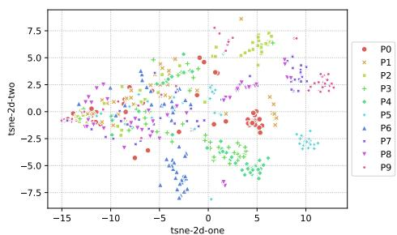

arXiv recent-list补漏 · P2 · 2026-06-11
Securing Self-supervised Data Curation for：随着自监督数据自动筛选成为 VFM 训练前置步骤，数据污染和过滤鲁棒性会直接影响通用表征质量
把自监督数据规模化中的安全/完整性问题显式化，强调匿名外部来源会放大 poisoning 风险。
编号2606.09511
优先级P2
类别arXiv recent-list补漏
会议arXiv recent-list补漏
方法用 ImageBind 表征结合传统分类器构建 Poisoned Data Detector，在 foundation model 训练前审查 SSL-curated datasets。
来源arXiv / OpenReview
先说结论。随着自监督数据自动筛选成为 VFM 训练前置步骤，数据污染和过滤鲁棒性会直接影响通用表征质量。 把自监督数据规模化中的安全/完整性问题显式化，强调匿名外部来源会放大 poisoning 风险。


核心问题
随着自监督数据自动筛选成为 VFM 训练前置步骤，数据污染和过滤鲁棒性会直接影响通用表征质量。
方法拆解
用 ImageBind 表征结合传统分类器构建 Poisoned Data Detector，在 foundation model 训练前审查 SSL-curated datasets。
主要贡献
把自监督数据规模化中的安全/完整性问题显式化，强调匿名外部来源会放大 poisoning 风险。
实验看点
摘要称使用 176,200 张图像、三类数据集、三种攻击评估 PDD。
局限与读法
偏安全/数据治理，核心方法依赖已有 ImageBind feature 和传统分类器；不是新的图像表征学习算法。